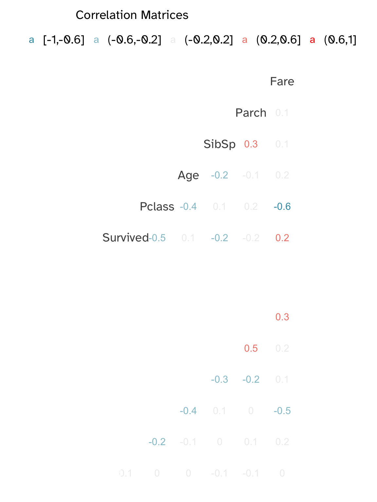
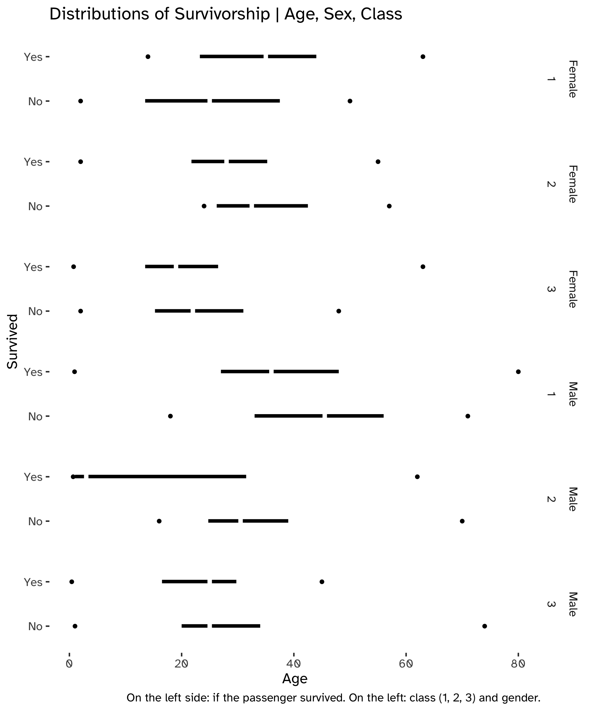

Code
source("helper_functions.R")Part 1: Data Exploration and Logit in R

source("helper_functions.R")train_data <- data_loader(
"titanic.zip",
"train.csv"
)
test_data <- data_loader(
"titanic.zip",
"test.csv"
)train_data %>% str'data.frame': 891 obs. of 12 variables:
$ PassengerId: int 1 2 3 4 5 6 7 8 9 10 ...
$ Survived : int 0 1 1 1 0 0 0 0 1 1 ...
$ Pclass : int 3 1 3 1 3 3 1 3 3 2 ...
$ Name : chr "Braund, Mr. Owen Harris" "Cumings, Mrs. John Bradley (Florence Briggs Thayer)" "Heikkinen, Miss. Laina" "Futrelle, Mrs. Jacques Heath (Lily May Peel)" ...
$ Sex : chr "male" "female" "female" "female" ...
$ Age : num 22 38 26 35 35 NA 54 2 27 14 ...
$ SibSp : int 1 1 0 1 0 0 0 3 0 1 ...
$ Parch : int 0 0 0 0 0 0 0 1 2 0 ...
$ Ticket : chr "A/5 21171" "PC 17599" "STON/O2. 3101282" "113803" ...
$ Fare : num 7.25 71.28 7.92 53.1 8.05 ...
$ Cabin : chr "" "C85" "" "C123" ...
$ Embarked : chr "S" "C" "S" "S" ...test_data %>% str'data.frame': 418 obs. of 11 variables:
$ PassengerId: int 892 893 894 895 896 897 898 899 900 901 ...
$ Pclass : int 3 3 2 3 3 3 3 2 3 3 ...
$ Name : chr "Kelly, Mr. James" "Wilkes, Mrs. James (Ellen Needs)" "Myles, Mr. Thomas Francis" "Wirz, Mr. Albert" ...
$ Sex : chr "male" "female" "male" "male" ...
$ Age : num 34.5 47 62 27 22 14 30 26 18 21 ...
$ SibSp : int 0 1 0 0 1 0 0 1 0 2 ...
$ Parch : int 0 0 0 0 1 0 0 1 0 0 ...
$ Ticket : chr "330911" "363272" "240276" "315154" ...
$ Fare : num 7.83 7 9.69 8.66 12.29 ...
$ Cabin : chr "" "" "" "" ...
$ Embarked : chr "Q" "S" "Q" "S" ...Some variables might benefit from scaling: Fare and Age.
train_data <- train_data %>%
mutate(
Age = scale(Age),
Fare = scale(Fare),
SibSp = scale(SibSp),
Parch = scale(Parch),
Sex = ifelse(
Sex == "male",
"Male",
ifelse(Sex == "female",
"Female",
NA
)
)
)
test_data <- test_data %>%
mutate(
Age = scale(Age),
Fare = scale(Fare),
SibSp = scale(SibSp),
Parch = scale(Parch),
Sex = ifelse(
Sex == "male",
"Male",
"Female"
)
)train_data %>% summary PassengerId Survived Pclass Name
Min. : 1.0 Min. :0.0000 Min. :1.000 Length:891
1st Qu.:223.5 1st Qu.:0.0000 1st Qu.:2.000 Class :character
Median :446.0 Median :0.0000 Median :3.000 Mode :character
Mean :446.0 Mean :0.3838 Mean :2.309
3rd Qu.:668.5 3rd Qu.:1.0000 3rd Qu.:3.000
Max. :891.0 Max. :1.0000 Max. :3.000
Sex Age.V1 SibSp.V1 Parch.V1
Length:891 Min. :-2.01557 Min. :-0.474279 Min. :-0.473408
Class :character 1st Qu.:-0.65908 1st Qu.:-0.474279 1st Qu.:-0.473408
Mode :character Median :-0.11697 Median :-0.474279 Median :-0.473408
Mean : 0.00000 Mean : 0.000000 Mean : 0.000000
3rd Qu.: 0.57143 3rd Qu.: 0.432550 3rd Qu.:-0.473408
Max. : 3.46270 Max. : 6.780355 Max. : 6.970233
NA's :177
Ticket Fare.V1 Cabin Embarked
Length:891 Min. :-0.648058 Length:891 Length:891
Class :character 1st Qu.:-0.488874 Class :character Class :character
Mode :character Median :-0.357190 Mode :character Mode :character
Mean : 0.000000
3rd Qu.:-0.024233
Max. : 9.661740
In the test data we do not have the dependent variable. Therefore, we need to split the dataset and use cross-validation to estimate the error.
N_train_obs <- dim(train_data)[1]
train_idx <- sample(
N_train_obs,
N_train_obs*.5
)as.factorfactorize_data <- function(dataframe) {
dataframe %>%
select(-Name, -Ticket) %>%
mutate(
Pclass = as.factor(Pclass),
Sex = as.factor(Sex),
# SibSp = as.factor(SibSp),
# Parch = as.factor(Parch),
Cabin = as.factor(Cabin),
Embarked = as.factor(Embarked)
)
}train_data_factorized <- factorize_data(dataframe = train_data)
test_data_factorized <- factorize_data(dataframe = test_data)train_data_factorized %>% summary PassengerId Survived Pclass Sex Age.V1
Min. : 1.0 Min. :0.0000 1:216 Female:314 Min. :-2.01557
1st Qu.:223.5 1st Qu.:0.0000 2:184 Male :577 1st Qu.:-0.65908
Median :446.0 Median :0.0000 3:491 Median :-0.11697
Mean :446.0 Mean :0.3838 Mean : 0.00000
3rd Qu.:668.5 3rd Qu.:1.0000 3rd Qu.: 0.57143
Max. :891.0 Max. :1.0000 Max. : 3.46270
NA's :177
SibSp.V1 Parch.V1 Fare.V1 Cabin
Min. :-0.474279 Min. :-0.473408 Min. :-0.648058 :687
1st Qu.:-0.474279 1st Qu.:-0.473408 1st Qu.:-0.488874 B96 B98 : 4
Median :-0.474279 Median :-0.473408 Median :-0.357190 C23 C25 C27: 4
Mean : 0.000000 Mean : 0.000000 Mean : 0.000000 G6 : 4
3rd Qu.: 0.432550 3rd Qu.:-0.473408 3rd Qu.:-0.024233 C22 C26 : 3
Max. : 6.780355 Max. : 6.970233 Max. : 9.661740 D : 3
(Other) :186
Embarked
: 2
C:168
Q: 77
S:644
quantiles_table <- train_data %>%
factorize_data() %>%
group_by(
Sex,
Pclass
) %>%
reframe(
Age_Quantiles = quantile(
de_scale(
Age
),
probs = c(
.25,
.5,
.75
),
na.rm = TRUE
) %>%
round(
.,
digits = 0
)
) %>%
mutate(
Quantile = rep(
c(
.25,
.50,
.75
),
6
)
)quantiles_table| Sex | Pclass | Age_Quantiles | Quantile |
|---|---|---|---|
| Female | 1 | 23 | 0.25 |
| Female | 1 | 35 | 0.50 |
| Female | 1 | 44 | 0.75 |
| Female | 2 | 22 | 0.25 |
| Female | 2 | 28 | 0.50 |
| Female | 2 | 36 | 0.75 |
| Female | 3 | 14 | 0.25 |
| Female | 3 | 22 | 0.50 |
| Female | 3 | 30 | 0.75 |
| Male | 1 | 30 | 0.25 |
| Male | 1 | 40 | 0.50 |
| Male | 1 | 51 | 0.75 |
| Male | 2 | 23 | 0.25 |
| Male | 2 | 30 | 0.50 |
| Male | 2 | 37 | 0.75 |
| Male | 3 | 20 | 0.25 |
| Male | 3 | 25 | 0.50 |
| Male | 3 | 33 | 0.75 |
cor_bygender_female <- train_data %>%
filter(
Sex == "Female"
) %>%
select(
-PassengerId
) %>%
GGally::ggcorr(
method = c(
"complete.obs",
"pearson"
),
geom = "text",
layout.exp = 1,
nbreaks = 5,
color = "grey30",
size = 5,
family = "Atkinson Hyperlegible",
legend.position = "top",
) +
labs(
title = "Correlation Matrices"
) +
theme(
legend.text = element_text(
size = 14,
),
)Registered S3 method overwritten by 'GGally':
method from
+.gg ggplot2Warning in GGally::ggcorr(., method = c("complete.obs", "pearson"), geom =
"text", : data in column(s) 'Name', 'Sex', 'Ticket', 'Cabin', 'Embarked' are
not numeric and were ignoredcor_bygender_male <- train_data %>%
filter(
Sex == "Male"
) %>%
GGally::ggcorr(
method = c(
"complete.obs",
"pearson"
),
geom = "text",
nbreaks = 5,
color = "white",
legend.position = "none"
)Warning in GGally::ggcorr(., method = c("complete.obs", "pearson"), geom =
"text", : data in column(s) 'Name', 'Sex', 'Ticket', 'Cabin', 'Embarked' are
not numeric and were ignoredcor_bygender_female / cor_bygender_male
train_data %>%
factorize_data() %>%
ggplot(
aes(
fill = factor(
ifelse(
Survived == 1,
"Yes",
"No"
)
),
x = de_scale(SibSp),
y = Age/100
)
) +
geom_bar(
width = .7,
stat = "identity"
) +
geom_hline(
yintercept = mean(
train_data$Age,
na.rm = TRUE
), col="grey99",
lwd = 1,
) +
facet_wrap(
vars(
Sex,
ifelse(
Pclass == 1,
"First Class",
ifelse(
Pclass == 2,
"Second Class",
"Third Class"
)
)
)
) +
scale_color_viridis_d(
aesthetics = c(
"colour",
"fill"),
option = "A",
begin = 0,
end = 0.6
) +
labs(
title = "Survivorship on the Titanic based on Number of Siblings, Age, Class, and Gender",
fill = "Survived",
x = "Number of Siblings",
y = "Age (Normalized)"
) +
theme_tufte(
base_size = 16,
base_family = "Atkinson Hyperlegible"
) +
theme(
legend.position = "top",
)
train_data %>%
factorize_data() %>%
mutate(
Survived = factor(
ifelse(
Survived == 1,
"Yes",
"No"
)
),
PClass = ifelse(
Pclass == 1,
"First Class",
ifelse(
Pclass == 2,
"Second Class",
"Third Class"
)
)
) %>%
ggplot(
aes(
x = Survived,
y = Age %>% de_scale()
)
) +
geom_tufteboxplot(
median.type = "line",
whisker.type = "point",
size = 2,
na.rm = TRUE
) +
coord_flip() +
facet_grid(
vars(
Sex,
Pclass)
) +
scale_color_viridis_d(
aesthetics = c(
"colour",
"fill"),
option = "A",
begin = .6,
end = 0
) +
labs(
title = "Distributions of Survivorship | Age, Sex, Class",
y = "Age",
caption = "On the left side: if the passenger survived. On the left: class (1, 2, 3) and gender."
) +
theme(
legend.position = "top"
) +
theme_tufte(
base_size = 18,
base_family = "Atkinson Hyperlegible"
)
fit_full <- glm(
Survived ~ .,
data = train_data_factorized,
family = "binomial",
na.action = na.omit,
subset = train_idx
)fit_full %>% summary
Call:
glm(formula = Survived ~ ., family = "binomial", data = train_data_factorized,
subset = train_idx, na.action = na.omit)
Coefficients:
Estimate Std. Error z value Pr(>|z|)
(Intercept) 1.934e+00 1.050e+00 1.842 0.065498 .
PassengerId 7.785e-04 6.741e-04 1.155 0.248163
Pclass2 -3.369e-01 1.031e+00 -0.327 0.743903
Pclass3 -1.484e+00 1.080e+00 -1.374 0.169419
SexMale -2.446e+00 3.871e-01 -6.320 2.61e-10 ***
Age -8.430e-01 2.404e-01 -3.507 0.000453 ***
SibSp -8.047e-01 2.841e-01 -2.832 0.004620 **
Parch -1.235e-01 1.849e-01 -0.668 0.504034
Fare 5.731e-01 8.566e-01 0.669 0.503463
CabinA20 2.074e+01 1.075e+04 0.002 0.998462
CabinA36 -1.823e+01 1.075e+04 -0.002 0.998648
CabinB18 1.689e+01 7.256e+03 0.002 0.998143
CabinB3 1.643e+01 1.075e+04 0.002 0.998781
CabinB35 1.593e+01 1.075e+04 0.001 0.998818
CabinB39 1.643e+01 1.075e+04 0.002 0.998781
CabinB42 1.689e+01 1.075e+04 0.002 0.998747
CabinB49 1.810e+01 6.503e+03 0.003 0.997779
CabinB50 1.930e+01 1.075e+04 0.002 0.998568
CabinB51 B53 B55 1.409e+01 1.075e+04 0.001 0.998955
CabinB57 B59 B63 B66 1.530e+01 7.600e+03 0.002 0.998393
CabinB58 B60 1.581e+01 1.075e+04 0.001 0.998827
CabinB73 1.708e+01 1.075e+04 0.002 0.998733
CabinB77 1.726e+01 7.596e+03 0.002 0.998187
CabinB82 B84 -1.971e+01 1.075e+04 -0.002 0.998538
CabinB86 -2.048e+01 1.075e+04 -0.002 0.998481
CabinB94 -1.775e+01 1.075e+04 -0.002 0.998683
CabinB96 B98 1.848e+01 7.300e+03 0.003 0.997980
CabinC101 2.032e+01 1.075e+04 0.002 0.998492
CabinC103 1.987e+01 1.075e+04 0.002 0.998525
CabinC104 2.159e+01 1.075e+04 0.002 0.998399
CabinC110 -1.782e+01 1.075e+04 -0.002 0.998678
CabinC118 -1.910e+01 1.075e+04 -0.002 0.998583
CabinC123 6.317e-01 1.954e+00 0.323 0.746424
CabinC125 1.836e+01 1.075e+04 0.002 0.998638
CabinC126 2.163e+01 1.075e+04 0.002 0.998395
CabinC148 1.876e+01 1.075e+04 0.002 0.998608
CabinC2 1.794e+01 1.075e+04 0.002 0.998669
CabinC22 C26 -2.196e+01 1.075e+04 -0.002 0.998371
CabinC23 C25 C27 -8.838e-01 4.014e+00 -0.220 0.825739
CabinC30 -1.741e+01 1.075e+04 -0.002 0.998709
CabinC32 1.611e+01 1.075e+04 0.001 0.998805
CabinC49 -2.086e+01 1.075e+04 -0.002 0.998452
CabinC50 1.760e+01 1.075e+04 0.002 0.998694
CabinC52 2.025e+01 1.075e+04 0.002 0.998497
CabinC54 1.603e+01 1.075e+04 0.001 0.998811
CabinC62 C64 1.444e+01 1.075e+04 0.001 0.998928
CabinC65 -2.072e+01 1.075e+04 -0.002 0.998463
CabinC68 1.725e+01 1.075e+04 0.002 0.998720
CabinC7 1.678e+01 1.075e+04 0.002 0.998755
CabinC83 1.844e+01 1.075e+04 0.002 0.998632
CabinC86 -1.887e+01 1.075e+04 -0.002 0.998600
CabinC87 -1.677e+01 1.075e+04 -0.002 0.998756
CabinC91 -1.953e+01 1.075e+04 -0.002 0.998551
CabinC92 2.048e+01 1.075e+04 0.002 0.998481
CabinC93 1.817e+01 1.075e+04 0.002 0.998652
CabinC99 1.708e+01 1.075e+04 0.002 0.998733
CabinD -9.066e-01 2.014e+00 -0.450 0.652648
CabinD10 D12 1.897e+01 1.075e+04 0.002 0.998593
CabinD11 1.902e+01 1.075e+04 0.002 0.998589
CabinD15 1.665e+01 1.075e+04 0.002 0.998765
CabinD17 1.875e+01 1.075e+04 0.002 0.998609
CabinD28 1.679e+01 1.075e+04 0.002 0.998755
CabinD30 -1.923e+01 1.075e+04 -0.002 0.998574
CabinD33 1.849e+01 1.075e+04 0.002 0.998628
CabinD35 2.063e+01 6.656e+03 0.003 0.997527
CabinD36 1.689e+01 1.075e+04 0.002 0.998747
CabinD48 -1.899e+01 1.075e+04 -0.002 0.998591
CabinD49 1.844e+01 1.075e+04 0.002 0.998632
CabinD6 -1.914e+01 1.075e+04 -0.002 0.998580
CabinD7 2.010e+01 1.075e+04 0.002 0.998509
CabinE10 2.218e+01 1.075e+04 0.002 0.998354
CabinE101 1.880e+01 1.075e+04 0.002 0.998605
CabinE12 2.139e+01 1.075e+04 0.002 0.998413
CabinE121 2.053e+01 1.075e+04 0.002 0.998477
CabinE17 2.126e+01 1.075e+04 0.002 0.998423
CabinE24 2.085e+01 1.075e+04 0.002 0.998453
CabinE25 2.063e+01 7.604e+03 0.003 0.997835
CabinE31 -1.724e+01 1.075e+04 -0.002 0.998721
CabinE38 -1.675e+01 1.075e+04 -0.002 0.998757
CabinE44 1.872e+01 1.075e+04 0.002 0.998611
CabinE46 -1.733e+01 1.075e+04 -0.002 0.998714
CabinE49 1.738e+01 1.075e+04 0.002 0.998711
CabinE63 -1.794e+01 1.075e+04 -0.002 0.998669
CabinE8 2.039e+01 1.075e+04 0.002 0.998487
CabinF2 2.013e+01 7.599e+03 0.003 0.997886
CabinF33 1.813e+01 1.075e+04 0.002 0.998655
CabinG6 3.227e-01 1.547e+00 0.209 0.834809
CabinT -1.793e+01 1.075e+04 -0.002 0.998670
EmbarkedQ -4.253e-01 8.823e-01 -0.482 0.629771
EmbarkedS -9.836e-01 4.704e-01 -2.091 0.036547 *
---
Signif. codes: 0 '***' 0.001 '**' 0.01 '*' 0.05 '.' 0.1 ' ' 1
(Dispersion parameter for binomial family taken to be 1)
Null deviance: 472.43 on 352 degrees of freedom
Residual deviance: 221.66 on 263 degrees of freedom
(92 observations deleted due to missingness)
AIC: 401.66
Number of Fisher Scoring iterations: 18fit_null <- glm(
Survived ~ 1,
data = train_data_factorized,
family = "binomial",
na.action = na.omit,
subset = train_idx
)sel_stepwise <- step(
fit_full,
scope = c(fit_null, fit_full),
direction = "both",
k = log(
dim(train_data_factorized)[1]
)
)Start: AIC=832.97
Survived ~ PassengerId + Pclass + Sex + Age + SibSp + Parch +
Fare + Cabin + Embarked
Df Deviance AIC
- Cabin 79 304.23 378.95
- Embarked 2 226.12 823.85
- Fare 1 222.09 826.61
- Parch 1 222.11 826.63
- PassengerId 1 223.00 827.52
- Pclass 2 230.11 827.83
<none> 221.66 832.97
- SibSp 1 231.57 836.09
- Age 1 235.79 840.31
- Sex 1 268.38 872.90
Step: AIC=378.95
Survived ~ PassengerId + Pclass + Sex + Age + SibSp + Parch +
Fare + Embarked
Df Deviance AIC
- Embarked 2 306.33 367.46
- Fare 1 304.76 372.69
- Parch 1 305.00 372.92
- PassengerId 1 308.18 376.10
<none> 304.23 378.95
- SibSp 1 313.57 381.49
- Age 1 324.47 392.39
- Pclass 2 333.78 394.91
- Sex 1 374.87 442.80
Step: AIC=367.46
Survived ~ PassengerId + Pclass + Sex + Age + SibSp + Parch +
Fare
Df Deviance AIC
- Parch 1 307.14 361.48
- Fare 1 307.24 361.57
- PassengerId 1 310.74 365.08
<none> 306.33 367.46
- SibSp 1 316.88 371.22
- Age 1 328.92 383.26
- Pclass 2 337.22 384.77
- Sex 1 381.00 435.34
Step: AIC=361.48
Survived ~ PassengerId + Pclass + Sex + Age + SibSp + Fare
Df Deviance AIC
- Fare 1 307.70 355.24
- PassengerId 1 311.10 358.65
<none> 307.14 361.48
- SibSp 1 319.90 367.44
- Age 1 329.42 376.97
- Pclass 2 341.10 381.86
- Sex 1 381.86 429.40
Step: AIC=355.24
Survived ~ PassengerId + Pclass + Sex + Age + SibSp
Df Deviance AIC
- PassengerId 1 311.60 352.36
<none> 307.70 355.24
- SibSp 1 319.90 360.65
- Age 1 330.89 371.65
- Pclass 2 368.52 402.48
- Sex 1 385.14 425.89
Step: AIC=352.36
Survived ~ Pclass + Sex + Age + SibSp
Df Deviance AIC
<none> 311.60 352.36
- SibSp 1 325.62 359.58
- Age 1 335.21 369.18
- Pclass 2 373.49 400.66
- Sex 1 386.76 420.72sel_stepwise %>% summary()
Call:
glm(formula = Survived ~ Pclass + Sex + Age + SibSp, family = "binomial",
data = train_data_factorized, subset = train_idx, na.action = na.omit)
Coefficients:
Estimate Std. Error z value Pr(>|z|)
(Intercept) 2.8355 0.3846 7.373 1.67e-13 ***
Pclass2 -1.8167 0.4240 -4.284 1.83e-05 ***
Pclass3 -2.9530 0.4199 -7.033 2.02e-12 ***
SexMale -2.4264 0.3077 -7.886 3.11e-15 ***
Age -0.8490 0.1863 -4.556 5.21e-06 ***
SibSp -0.7031 0.2099 -3.350 0.000807 ***
---
Signif. codes: 0 '***' 0.001 '**' 0.01 '*' 0.05 '.' 0.1 ' ' 1
(Dispersion parameter for binomial family taken to be 1)
Null deviance: 472.43 on 352 degrees of freedom
Residual deviance: 311.60 on 347 degrees of freedom
(92 observations deleted due to missingness)
AIC: 323.6
Number of Fisher Scoring iterations: 5sel_stepwise <- update(
sel_stepwise,
formula = Survived ~ Pclass*Sex*Age + SibSp,
subset = train_idx
)
sel_stepwise %>% summary()
Call:
glm(formula = Survived ~ Pclass + Sex + Age + SibSp + Pclass:Sex +
Pclass:Age + Sex:Age + Pclass:Sex:Age, family = "binomial",
data = train_data_factorized, subset = train_idx, na.action = na.omit)
Coefficients:
Estimate Std. Error z value Pr(>|z|)
(Intercept) 3.2725 0.8485 3.857 0.000115 ***
Pclass2 -0.9109 1.0658 -0.855 0.392711
Pclass3 -4.3699 0.9863 -4.431 9.4e-06 ***
SexMale -3.0746 0.9310 -3.303 0.000958 ***
Age -0.2886 0.7851 -0.368 0.713129
SibSp -0.7374 0.2138 -3.449 0.000563 ***
Pclass2:SexMale -2.2453 1.3457 -1.669 0.095203 .
Pclass3:SexMale 2.0227 1.0939 1.849 0.064455 .
Pclass2:Age 0.2043 1.0869 0.188 0.850885
Pclass3:Age -0.9265 0.9231 -1.004 0.315506
SexMale:Age -0.5629 0.8615 -0.653 0.513490
Pclass2:SexMale:Age -1.3253 1.3165 -1.007 0.314073
Pclass3:SexMale:Age 0.6551 1.0690 0.613 0.540002
---
Signif. codes: 0 '***' 0.001 '**' 0.01 '*' 0.05 '.' 0.1 ' ' 1
(Dispersion parameter for binomial family taken to be 1)
Null deviance: 472.43 on 352 degrees of freedom
Residual deviance: 284.30 on 340 degrees of freedom
(92 observations deleted due to missingness)
AIC: 310.3
Number of Fisher Scoring iterations: 6convert_to_prob <- function(logit) {
exp(logit)/(1+exp(logit))
}sel_stepwise %>%
coef() %>%
convert_to_prob() (Intercept) Pclass2 Pclass3 SexMale
0.96347384 0.28681377 0.01249456 0.04416834
Age SibSp Pclass2:SexMale Pclass3:SexMale
0.42833772 0.32357635 0.09575204 0.88316048
Pclass2:Age Pclass3:Age SexMale:Age Pclass2:SexMale:Age
0.55090481 0.28363378 0.36287799 0.20993213
Pclass3:SexMale:Age
0.65815852 predictions <-
ifelse(
predict(
sel_stepwise,
newdata = train_data_factorized[-train_idx, ],
type = "response"
) > 0.7293,
1,
0
)
pROC::roc(
train_data_factorized[-train_idx, ]$Survived,
predictions,
)Setting levels: control = 0, case = 1Setting direction: controls < cases
Call:
roc.default(response = train_data_factorized[-train_idx, ]$Survived, predictor = predictions)
Data: predictions in 209 controls (train_data_factorized[-train_idx, ]$Survived 0) < 152 cases (train_data_factorized[-train_idx, ]$Survived 1).
Area under the curve: 0.7727pROC::ggroc(
pROC::roc(
train_data_factorized[-train_idx, ]$Survived,
predictions,
)
) +
geom_abline(
aes(
slope = 1,
intercept = 1
),
color = "grey90"
)Setting levels: control = 0, case = 1Setting direction: controls < cases
mean(predictions == train_data_factorized[-train_idx, ]$Survived, na.rm = TRUE )[1] 0.8033241csvpredictions_test <- ifelse(
predict(
sel_stepwise,
newdata = test_data_factorized,
type = "response"
) > 0.7293,
1,
0
)if(submission_flag == TRUE & logit_flag == TRUE) {
submission <- data.frame(
PassengerId = test_data %>%
select(PassengerId),
Survived = predictions_test
)
submission %>% head
}if(submission_flag == TRUE & logit_flag == TRUE) {
write.csv(
submission,
"data/logit_submission.csv",
row.names = FALSE
)
}Score: 0.6244
This result is awful: as expected, the logistic regression is highly interpretable but suffers from high bias and therefore has low prediction capabilities.
nb_fit <- naiveBayes(
Survived ~ Pclass + Sex + Age + SibSp,
data = train_data_factorized,
subset = train_idx
)nb_fit
Naive Bayes Classifier for Discrete Predictors
Call:
naiveBayes.default(x = X, y = Y, laplace = laplace)
A-priori probabilities:
Y
0 1
0.6359551 0.3640449
Conditional probabilities:
Pclass
Y 1 2 3
0 0.1272085 0.1731449 0.6996466
1 0.4012346 0.2469136 0.3518519
Sex
Y Female Male
0 0.1519435 0.8480565
1 0.6543210 0.3456790
Age
Y [,1] [,2]
0 -0.01546822 0.9507798
1 -0.15267365 1.0007140
SibSp
Y [,1] [,2]
0 0.03841616 1.1087170
1 -0.06564589 0.6152281naivebayes_CV <- predict(
nb_fit,
train_data_factorized
)mean(naivebayes_CV == train_data_factorized$Survived)[1] 0.7620651We can also access the raw posterior probabilities as computed by the Naïve Bayes method:
predict(
nb_fit,
train_data_factorized,
type = "raw"
) %>%
head() %>%
kableExtra::kbl(
) %>%
kableExtra::kable_styling()| 0 | 1 |
|---|---|
| 0.8574426 | 0.1425574 |
| 0.0951096 | 0.9048904 |
| 0.3395186 | 0.6604814 |
| 0.0936105 | 0.9063895 |
| 0.8547389 | 0.1452611 |
| 0.8412220 | 0.1587780 |
naivebayes_test <- predict(
nb_fit,
test_data_factorized
)if(submission_flag == TRUE & nb_flag == TRUE) {
submission <- data.frame(
PassengerId = test_data %>%
select(PassengerId),
Survived = naivebayes_test
)
submission %>% head
}| PassengerId | Survived |
|---|---|
| 892 | 0 |
| 893 | 1 |
| 894 | 0 |
| 895 | 0 |
| 896 | 1 |
| 897 | 0 |
Naïve Bayes predictions for the test set.
if(submission_flag == TRUE & nb_flag == TRUE) {
write.csv(
submission,
"data/nb_submission.csv",
row.names = FALSE
)
}Score: 0.75598
qda_fit <- MASS::qda(
Survived ~ Pclass + Sex + Age + SibSp,
data = train_data_factorized,
subset = train_idx
)qda_fitCall:
qda(Survived ~ Pclass + Sex + Age + SibSp, data = train_data_factorized,
subset = train_idx)
Prior probabilities of groups:
0 1
0.6090652 0.3909348
Group means:
Pclass2 Pclass3 SexMale Age SibSp
0 0.2139535 0.6511628 0.8418605 -0.01546822 0.08247216
1 0.2753623 0.2898551 0.3550725 -0.15267365 -0.06029156qda_CV <- predict(qda_fit, train_data_factorized[-train_idx, ])$classkableExtra::kable(
table(
"Predicted"= qda_CV,
"Observed"= train_data_factorized[-train_idx, ]$Survived
),
caption = "Contingency Table for QDA classifier."
) %>%
tbl_styling| 0 | 1 | |
|---|---|---|
| 0 | 169 | 37 |
| 1 | 40 | 115 |
mean(qda_CV == train_data_factorized[-train_idx, ]$Survived, na.rm = T)[1] 0.7867036qda_test <- predict(
qda_fit,
test_data_factorized
)$classif(submission_flag == TRUE & qda_flag == TRUE) {
qda_submission <- data.frame(
PassengerId = test_data %>%
select(PassengerId),
Survived = qda_test
)
qda_submission %>% head
}if(submission_flag == TRUE & qda_flag == TRUE) {
write.csv(
submission,
"data/qda_submission.csv",
row.names = FALSE
)
}